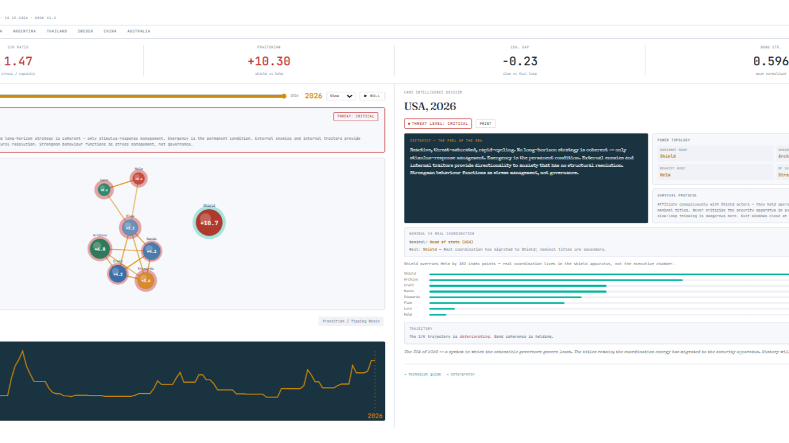

Multiple agents, bias-resistant estimates, quantified uncertainty, zero editorial input — and a compact typewriter-style dossier for any society at any year.
Ensemble sampling is now central to the CAMS data pipeline. Multiple independent agents score identical society-year-node sets. The mean delivers a bias-resistant central estimate; the envelope (min/max or σ) quantifies uncertainty. Fragile nodes become visible — wide envelopes in post-2016 UK and USA data reveal exactly where the uncertainty lives. The data then feeds the telescope, and the telescope feeds Mindscapes.
75–90%
Hindcast accuracy across longitudinal datasets
σ envelope
Quantified uncertainty — visible where historical data is contested
0
Human editorial interventions in Mindscapes output pipeline
The Automated Pipeline
From raw scores to national-mood intelligence
Raw multi-agent scores
→
Ensemble mean + envelope
→
Fixed template
→
Universal scalars
→
Deterministic output
The pipeline ingests raw multi-agent scores, aggregates to ensemble mean and envelope, and feeds a fixed, version-controlled template. Universal scalars — M(t), Y(t), Headroom, Σσ — institutional mappings, and the failure-modes diagram are generated deterministically. The result is reproducible, scalable national-mood intelligence: ensemble robustness plus template discipline converts noisy historical data into objective, forward-looking coordination diagnostics without narrative distortion.
Failure Mode Timescales
Node
Failure type
Timescale
Helm
Paralysis — coordination ceases, factions substitute for executive function
Years–decades
Lore
Normative collapse — shared meaning fragments; legitimacy erodes without replacement
Centuries
Hands
Motivational failure — labour capacity falls; systems built on throughput stall
Years
Mindscapes — Reproducible National Mood Intelligence
Zero editorial input
Reports at neuralnations.org/mindscapes are generated with zero human editorial input — fully automated interpretive pipeline.
What emerges is structured psychohistory: national character anchored in measurable coordination fields, not narrative intuition.
The CAMS Telescope
The CAMS Telescope is the single-society dossier: a compact, typewriter-style reading of one society at one year. It is ideal for a quick structural assessment — not discovery, but diagnosis. Load a year, read the signals.

CAMS Telescope · USA 2026 · Threat Level: Critical. S/K 1.47 · Praetorian index +10.30 · Shield dominant, Helm weakest. "No long-horizon strategy is coherent — only stimulus-response management."
Node network + bond visualisation
Spring-physics simulation of all eight nodes; bond thickness maps coordination strength; stressed nodes surface in red.
Threat level classification
Nominal · Watch · Warning · Critical · Extreme — derived from S/K ratio, Praetorian index, cog_gap, and bond coherence Λ.
Power topology
Dominant and weakest node identification; structural reading of where coordination energy actually lives vs where it nominally resides.
Trajectory + survival protocol
S/K sparkline across all available years; attractor basin classification; forward-looking coordination prescription.
Public analysis is trapped at the level of personality, ideology, and moral performance. CAMS moves the question underneath that surface. It asks: how is the coordination system actually behaving? Is the Helm still leading, or has power shifted to Shield, Stewards, or Lore? Is Archive still preserving memory, or has institutional forgetting become dangerous? Are Hands and Flow carrying unsustainable stress while the upper layers narrate confidence?
CAMS does not abolish interpretation, but it disciplines it. Make the measurements, publish the assumptions, show the formulas, expose the data, and let others test the result.